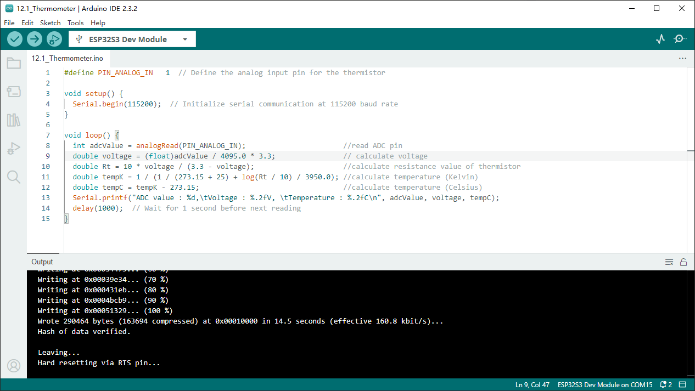
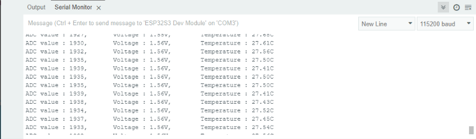

Chapter 12 Thermistor
In this chapter, we will learn about thermistors which are another kind of resistor
Project 12.1 Thermometer
A thermistor is a type of resistor whose resistance value is dependent on temperature and changes in temperature. Therefore, we can take advantage of this characteristic to make a thermometer.
Component List
ESP32-S3-WROOM x1
GPIO Extension Board x1
830 Tie-Points Breadboard x1
Resistor 10kΩ x1
Thermistor x1
Jumper Wire x3
Component knowledge
Thermistor
Connect
The circuit of this project is similar to the one in the last chapter. The only difference is that the photoresistor is replaced by the thermistor.

Sketch
Sketch_12.1_Thermometer
Download the code to ESP32-S3 WROOM, the terminal window will display the current ADC value, voltage value and temperature value. Try to “pinch” the thermistor (without touching the leads) with your index finger and thumb for a brief time, you should see that the temperature value increases.
Code
The following is the program code:
#define PIN_ANALOG_IN 1
void setup() {
Serial.begin(115200);
}
void loop() {
int adcValue = analogRead(PIN_ANALOG_IN); //read ADC pin
double voltage = (float)adcValue / 4095.0 * 3.3; // calculate voltage
double Rt = 10 * voltage / (3.3 - voltage); //calculate resistance value of thermistor
double tempK = 1 / (1 / (273.15 + 25) + log(Rt / 10) / 3950.0); //calculate temperature (Kelvin)
double tempC = tempK - 273.15; //calculate temperature (Celsius)
Serial.printf("ADC value : %d,\tVoltage : %.2fV, \tTemperature : %.2fC\n", adcValue, voltage, tempC);
delay(1000);
}
In the code, GPIO1 is connected to the thermistor circuit. ESP32-S3 reads the ADC value of GPIO1, calculates the voltage and resistance value of the thermistor according to Ohm’s law, and finally calculates the temperature value perceived by the thermistor according to the formula.